👋 Olá, eu sou
João Miguel
Santos Rosa
Engenheiro focado em MBSE/SysML v2, ECSS/PUS e software para sistemas espaciais. Construo modelos, ferramentas e soluções que aproximam a engenharia de sistemas do código.

0
Projetos
0
Tecnologias
0
Anos Experiência
0
Dedicação
Portfólio
Projetos em Destaque
Alguns dos trabalhos mais recentes.